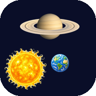

Children Games
Space
Stories and planets to explore
Ari & Dot
A story about the planets

Planets & Moons
Planets in order, moons at home, then the dwarf planets
 Ari & Dot
A story about the planets
Ari & Dot
A story about the planets